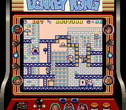

Fue lanzado en 1994 para GameBoy. No lo he puesto junto al Donkey Kong ya que es un juego totalmente distinto. Tomas el control de Mario para salvar a Pauline de las garras de Donkey Kong. Donkey Kong Jr. 
También hace una aparición en el juego en algunos niveles, ayudando a su padre. Comienza con los cuatro niveles del juego original de arcade, pero con mejor desempeño de gráficos y mecánica de juego. Despues de derrotarle, revive Donkey Kong llevandose, otra vez a Pauline. Aparecen 97 etapas adicionales que abarcan nueve mundos, por un total de 101 etapas. Las nuevas etapas son totalmente diferentes a las fases originales. Vendió en total 3,07 millones.